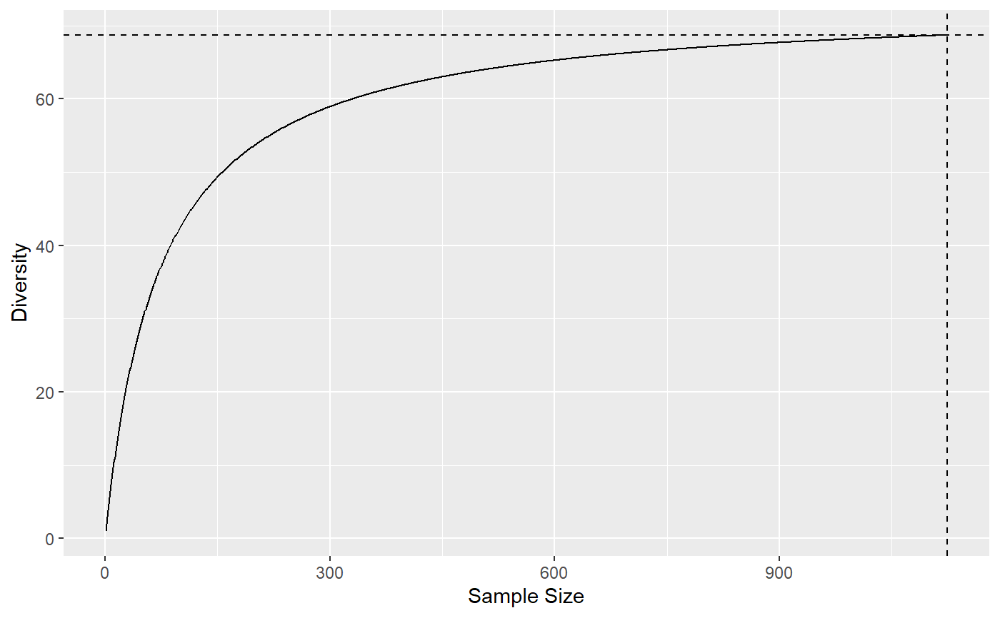

Accumulation.RdDiversity and Entropy Accumulation Curves represent the accumulation of entropy with respect to the sample size.
as.AccumCurve(x, y, low = NULL, high = NULL) is.AccumCurve(x) EntAC(Ns, q = 0, n.seq = 1:sum(Ns), PCorrection="Chao2015", Unveiling="geom", RCorrection="Rarefy", NumberOfSimulations = 0, Alpha = 0.05, ShowProgressBar = TRUE, CheckArguments = TRUE) DivAC(Ns, q = 0, n.seq = 1:sum(Ns), PCorrection="Chao2015", Unveiling="geom", RCorrection="Rarefy", NumberOfSimulations = 0, Alpha = 0.05, ShowProgressBar = TRUE, CheckArguments = TRUE) # S3 method for AccumCurve plot(x, ..., main = NULL, xlab = "Sample Size", ylab = NULL, ylim = NULL, LineWidth = 2, ShadeColor = "grey75", BorderColor = "red") # S3 method for AccumCurve autoplot(object, ..., main = NULL, xlab = "Sample Size", ylab = NULL, ShadeColor = "grey75", alpha = 0.3, BorderColor = "red")
| x | An object. A numeric vector in |
|---|---|
| object | An object. |
| y | A numeric vector. |
| low | A numeric vector. |
| high | A numeric vector. |
| Ns | A numeric vector containing species abundances. |
| q | A number: the order of diversity. Default is 1. |
| n.seq | A sequence of numbers. Accumulation will be calculated at each value. |
| PCorrection | A string containing one of the possible corrections to estimate a probability distribution in |
| Unveiling | A string containing one of the possible unveiling methods to estimate the probabilities of the unobserved species in |
| RCorrection | A string containing a correction recognized by |
| NumberOfSimulations | The number of Simulations to build confidence intervals. |
| Alpha | The risk level, 5% by default. |
| ... | Additional arguments to be passed to |
| main | The main title of the plot. if |
| xlab | The X axis label, "Rank" by default. |
| ylab | The Y axis label. if |
| ylim | The interval of y values plotted. |
| LineWidth | The width of the line that represents the actual profile. |
| ShadeColor | The color of the shaded confidence envelope. |
| BorderColor | The color of the bounds of the confidence envelope. |
| alpha | Opacity of the confidence enveloppe, between 0 and 1. |
| ShowProgressBar | If |
| CheckArguments | Logical; if |
DivAC or EntAC estimate the diversity or entropy accumulation curve of a distribution.
See Tsallis for details about the computation of entropy at each level of interpolation and extrapolation.
In accumulation curves, extrapolation if done by estimating the asymptotic distribution of the community and estimating entropy at different levels by interpolation. The asymptotic richess is adjusted so that the extrapolated part of the accumulation joins the observed value at the sample size.
AccumCurve objects include EntAC and DivAC objects for entropy and diversity accumulation.
They generalize the classical Species Accumulation Curves (SAC) which are diversity accumulation of order $q=0$.
as.AccumCurve transforms two vectors (where x is the sammple size and y the accumulation) into an object of class AccumCurve.
AccumCurve objects can be plotted with either plot or autoplot methods.
A DivAC or an EntAC object. Both are AccumCurve objects, which are a list:
The sample size.
The value of entropy or diversity.
The lower bound of the confidence envelope of the estimation.
The upper bound of the confidence envelope of the estimation.
Chao, A., Gotelli, N. J., Hsieh, T. C., Sander, E. L., Ma, K. H., Colwell, R. K., Ellison, A. M (2014). Rarefaction and extrapolation with Hill numbers: A framework for sampling and estimation in species diversity studies. Ecological Monographs, 84(1): 45-67.
# Load Paracou data (number of trees per species in two 1-ha plot of a tropical forest) data(Paracou618) # Ns is the total number of trees per species Ns <- as.AbdVector(Paracou618.MC$Ns) # Accumulation curve of Simpson's diversity autoplot(DivAC(Ns, q=2))#>